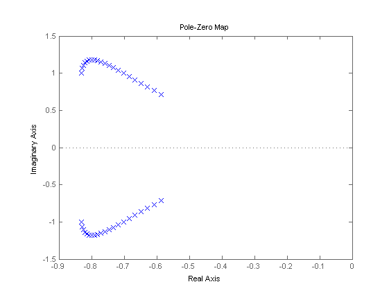
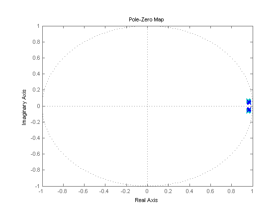
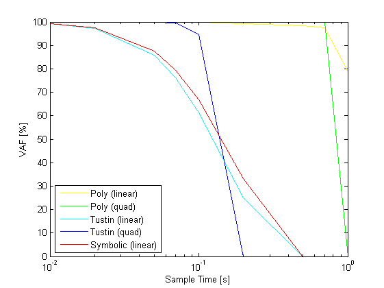
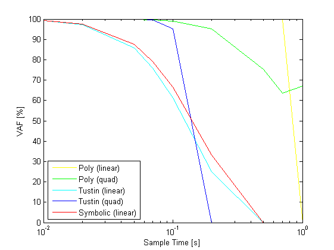
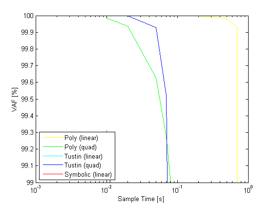
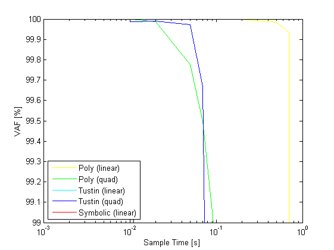

Contents
Example 17: Discretization of continuous LPV model of F-16
close all; clear; clc;
F-16 VISTA Flight Model
For model see [1]
% continuous-model A0 = [0.22 1; 17.1 -0.228]; A1 = [-4.10e-7 0; -8.07e-4 7.06e-6]; A2 = [-2.6 0; -68.4 -2.12]; A3 = [5.15e-5 0; 3.31e-3 4.86e-5]; A4 = [0 0; 56.2 0]; A5 = [0 0; -2.92e-3 0]; B0 = [-1.38e-3; -8.16]; B1 = [8.75e-8; 1.73e-4]; B2 = [-0.34; 40.6]; B3 = [7.89e-6; -8.96e-4]; B4 = [0; -99.3]; B5 = [0; 2.42e-3]; C0 = eye(2); % make affine lpv system sys = idafflpv([A0 A1 A2 A3 A4 A5],[B0 B1 B2 B3 B4 B5],[C0 zeros(2,5*2)],zeros(2,6),... 'statename',{'alpha' 'q'},'schedulingname',{'h' 'M' '(h*M)' '(M^2)' '(h*M^2)'},... 'inputname','elevator','outputname',{'angle-of-attack' 'pitch-rate'},'Name','F16 Aircraft');
Discretization of continuous LPV model
% discrete approximation sysde1 = c2d(sys,0.05,'euler','linear'); sysde2 = c2d(sys,0.05,'euler','quadratic'); sysde3 = c2d(sys,0.05,'tustin','linear'); sysde4 = c2d(sys,0.05,'tustin','quadratic');
Discretization results
% scheduling signals t = (0:0.05:1)'; M = linspace(0.4,0.6,length(t))'; h = linspace(5000,25000,length(t))'; p = [h M h.*M M.^2 M.^2.*h]; pq = [h M h.*M M.^2 M.^2.*h h.*h h.*M h.*h.*M h.*M.^2 h.*M.^2.*h... M.*M M.*h.*M M.*M.^2 M.*M.^2.*h h.*M.*h.*M h.*M.*M.^2 h.*M.*M.^2.*h... M.^2.*M.^2 M.^2.*M.^2.*h M.^2.*h.*M.^2.*h]; % pole and zero locations sys0 = idafflpv2ss(sys,p); figure, pzmap(sys0); syse1 = idafflpv2ss(sysde1,p); syse2 = idafflpv2ss(sysde2,pq); syse3 = idafflpv2ss(sysde3,p); syse4 = idafflpv2ss(sysde4,pq); figure, pzmap(syse1,'y',syse2,'g',syse3,'c',syse4,'b'); 
Performance of discretization
% sample times Ts = [0.01 0.02 0.05 0.07 0.1 0.2 0.5 0.7 1]; % scheduling signals t = 0:Ts(1):100; u = sin(0.2.*t)'; M = linspace(0.4,0.6,length(t))'; h = linspace(5000,25000,length(t))'; p = [h M h.*M M.^2 M.^2.*h]; pq = [h M h.*M M.^2 M.^2.*h h.*h h.*M h.*h.*M h.*M.^2 h.*M.^2.*h... M.*M M.*h.*M M.*M.^2 M.*M.^2.*h h.*M.*h.*M h.*M.*M.^2 h.*M.*M.^2.*h... M.^2.*M.^2 M.^2.*M.^2.*h M.^2.*h.*M.^2.*h]; % continuous simulation [yc,tc] = sim(sys,u,t,p); % euler approximation sysde1 = c2d(sys,Ts(1),'euler','linear'); sysdeq1 = c2d(sys,Ts(1),'euler','quadratic'); [ye1,te1] = sim(sysde1,u,t,p); [yeq1,teq1] = sim(sysdeq1,u,t,pq); n = 1; VAFZ = zeros(2,length(Ts)); VAFE = zeros(2,length(Ts)); VAFT = zeros(2,length(Ts)); VAFZ1 = zeros(2,length(Ts)); VAFE1 = zeros(2,length(Ts)); VAFT1 = zeros(2,length(Ts)); VAFEQ = zeros(2,length(Ts)); VAFTQ = zeros(2,length(Ts)); VAFE1Q = zeros(2,length(Ts)); VAFT1Q = zeros(2,length(Ts)); for j = 1:length(Ts); t = 0:Ts(j):100; u = sin(0.2.*t)'; M = linspace(0.4,0.6,length(t))'; h = linspace(5000,25000,length(t))'; p = [h M h.*M M.^2 M.^2.*h]; pq = [h M h.*M M.^2 M.^2.*h h.*h h.*M h.*h.*M h.*M.^2 h.*M.^2.*h... M.*M M.*h.*M M.*M.^2 M.*M.^2.*h h.*M.*h.*M h.*M.*M.^2 h.*M.*M.^2.*h... M.^2.*M.^2 M.^2.*M.^2.*h M.^2.*h.*M.^2.*h]; % symbolic sysdz = c2d(sys,Ts(j),'zoh','linear'); [yz,tz] = sim(sysdz,u,t',p); % euler approximation sysde = c2d(sys,Ts(j),'euler','linear'); [ye,te] = sim(sysde,u,t',p); % tustin approximation sysdt = c2d(sys,Ts(j),'tustin','linear'); [yt,tt] = sim(sysdt,u,t',p); % euler approximation sysdeq = c2d(sys,Ts(j),'euler','quadratic'); [yeq,teq] = sim(sysdeq,u,t',pq); % tustin approximation sysdtq = c2d(sys,Ts(j),'tustin','quadratic'); [ytq,ttq] = sim(sysdtq,u,t',pq); ys = interp1q(tc,yc',t'); ys1 = interp1q(te1,ye1,t'); ysq1 = interp1q(teq1,yeq1,t'); VAFZ(:,j) = vaf(ys,yz); VAFE(:,j) = vaf(ys,ye); VAFT(:,j) = vaf(ys,yt); VAFZ1(:,j) = vaf(ys1,yz); VAFE1(:,j) = vaf(ys1,ye); VAFT1(:,j) = vaf(ys1,yt); VAFEQ(:,j) = vaf(ys,yeq); VAFTQ(:,j) = vaf(ys,ytq); VAFE1Q(:,j) = vaf(ysq1,yeq); VAFT1Q(:,j) = vaf(ysq1,ytq); end figure,semilogx(Ts,VAFEQ(1,:),'y',Ts,mean(VAFE),'g',Ts,mean(VAFT),'c',Ts,mean(VAFTQ),'b',Ts,mean(VAFZ),'r'); xlabel('Sample Time [s]') ylabel('VAF [%]') legend('Poly (linear)','Poly (quad)','Tustin (linear)','Tustin (quad)','Symbolic (linear)','Location','SouthWest'); figure,semilogx(Ts,mean(VAFE1),'y',Ts,mean(VAFE1Q),'g',Ts,mean(VAFT1),'c',Ts,mean(VAFT1Q),'b',Ts,mean(VAFZ1),'r'); xlabel('Sample Time [s]') ylabel('VAF [%]') legend('Poly (linear)','Poly (quad)','Tustin (linear)','Tustin (quad)','Symbolic (linear)','Location','SouthWest'); figure,semilogx(Ts,mean(VAFE),'y',Ts,mean(VAFEQ),'g',Ts,mean(VAFT),'c',Ts,mean(VAFTQ),'b',Ts,mean(VAFZ),'r'); xlabel('Sample Time [s]') ylabel('VAF [%]') legend('Poly (linear)','Poly (quad)','Tustin (linear)','Tustin (quad)','Symbolic (linear)','Location','SouthWest'); axis([0.001 1 99 100]); figure,semilogx(Ts,mean(VAFE1),'y',Ts,mean(VAFE1Q),'g',Ts,mean(VAFT1),'c',Ts,mean(VAFT1Q),'b',Ts,mean(VAFZ1),'r'); xlabel('Sample Time [s]') ylabel('VAF [%]') legend('Poly (linear)','Poly (quad)','Tustin (linear)','Tustin (quad)','Symbolic (linear)','Location','SouthWest'); axis([0.001 1 99 100]);   
References
[1] M. Spillman, P. Blue, S. Banda, and L. Lee, "A Robust Gain-Scheduling Example Using Linear Parameter-Varying Feedback," Proc. of the 13th IFAC World Congress, San Francisco, vol. H, pp. 221-226, 1996